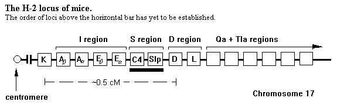
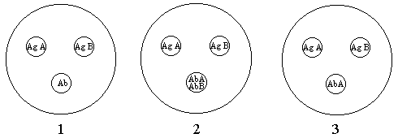
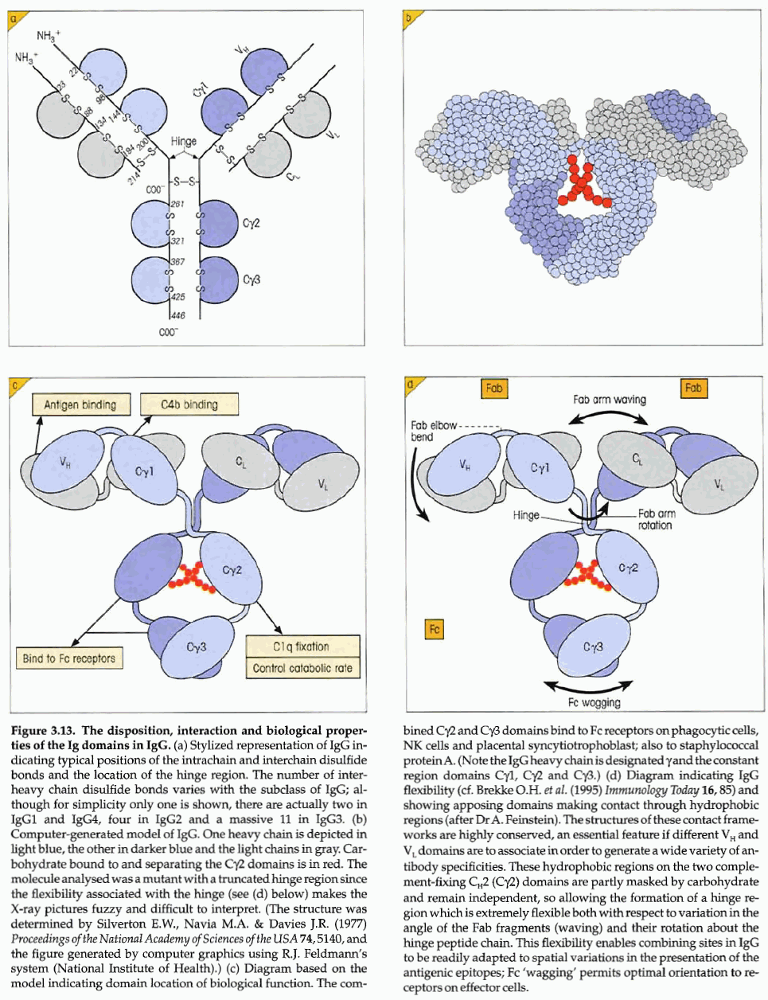

Immunology Reference
Generally a review of basic immunology. Discusses very briefly (1) preparation of immune sera; (2) adjuvants; (3) dynamics of antibody formation: primary and secondary response to antigen; (4) study of antibody formation at the cellular level using the Jerne plaque technique, rosette technique, and microdrop technique; (5) hybridomas; (6) antibody formation at the protein level; (7) antibody purification using nonspecific methods (AmSO 4 precipitation; DEAE cellulose chromatography, ethanol fractionation, and the less used pepsin digestion technique) and specific methods (affinity-based separation with proteins known to interact with single and multiple class antibodies); (8) nature and heterogeneity of antibodies and immunoglobulin structure; (9) enzymatic fragmentation with papain to separate binding and constant parts of molecule; (10) specific subclasses of each class and much more.
Antibody diversity.
Isotypes . Human Igs injected into a rabbit will provoke formation of anti-human Igs in the rabbit. When the human serum is then electrophoretically separated and then the gel treated with rabbit antiserum, a number of precipitin arcs will form which correspond to a separate distinct Ig class. The dominant isotype is IgG, followed by separate arcs of IgM and IgA. IgD and Ige are below level of detection. Hence all isotypic determinants are shared by all members of a species. Anti-isotypic antisera must therefore be raised in another heterologous species.
Allotypes . Antigenically distinct antibodies found in some members of a species but not all. These are inherited as simple Mendelian traits. A rough analogy is the ABO blood group: A-antigens can be present on red blood cells, and such individuals have anti-B antibodies. Rabbit IgG molecules exist in two allotypes: d11 and d12. Homozygous d11 rabbits ( d 11/ d 11) produce anti-d12 antibodies when injected with IgG molecules from a d12 rabbit.
Idiotypes . If a rabbit IgG molecule is derivated with DNP or with KLH, the resulting different structure implies a different antigenic determinant. In allotypically identical rabbits, a second rabbit injected with the derivatized IgG, then only the DNP-determinant is foreign to that rabbit. Antibodies to that determinant are idiotypic. To test for idiotypic antiserum is easy: collect pre-immune serum from rabbit B before immunizing with derivatized Ig from rabbit A. There should be no reaction with the preimmune sera of iso- and allotypically matched rabbits, but precipitation should occur with the immune serum.
Cell-Mediated Immunity
Tuberculosis was epidemic in the time of Pasteur and Koch. Koch isolated crude extracts of the bacterium causing tuberculosis, calling it tuberculin. While it never made a good vaccine, it was useful diagnostically: called the Mantoux test, about 0.1 μg of tuberculin or PPD (purified protein derivative) is introduced under the skin. If the individual has been exposed to the disease, and thereby sensitized, a red, slightly swollen lesion firm to the touch appears in about 10 hours and reaches a peak in 48-72 h. Because of the long duration in comparison to other immune reactions, the response is called delayed-type hypersensitivity . The lesions are marked cytologically by a large number of lymphocytes and macrophages. This DTH immune reaction could not be transferred to other individuals by serum alone, despite the presence of antibacterial antibodies. Only with the transfer of lymphoid cells is the acquisition of DTH possible, called adoptive immunity.
Transplantation immunity . There are basically 4 kinds of grafts in transplantion:
Graft rejection responses are characterized by two phases. In the first phase, for example, tissue from a mouse of the CBA strain is transferred to a BALB/c mouse. At first the tissue is revascularized, heals well, and appears to take. Then after 10-14 days, the graft is infiltrated with inflammatory cells and the blood supply breaks down. After a few days, the graft shrivels into a scab and is sloughed off. If now a second graft from the CBA strain is put on the same “sensitized” individual, the rejection is more rapid, called a seoond-set reaction: there is no revascularization, and the graft sloughs off in 5-6 days instead. If now a graft from a different strain (e.g., C57BL) is placed on the BALB/c mouse, the second-set reaction does not occur, but rather the first reaction is observed, being necessary to sensitize the animal to the new strain. Hence, CMI is specific as well as having memory (according to the second-set response).
Transplantation (histocompatibility) antigens (the H-2 locus) . When tissues between two members of the same sex of the same highly inbred strain are grafted, rejection is not likely to occur. (Because the Y chromosome codes for histocompatibility antigens, male-to-female grafts are likely to be rejected by females.)
When a CBA mouse is crossed to a BALB/c mouse, the offspring can accepts grafts from either parent, although neither parent can accept a graft from the offspring. The offspring must be heterozygous for histocompatibility antigens present homozygously in their parents (highly inbred), so they can therefore accept tissues without rejection. If the F 1 animals are self-bred to produce the F 2 generation, then what happens when the F 2 offspring receive grafts from the parents? Assuming a single locus histocompatibility gene, then it is expected that 3 out of 4 of the F 2 generation would accept grafts from either parent. This is because 2 of 4 will be heterozygous for the locus, another 1 of the 4 will be homozygous for the antigen in the tissue, and the last one of the 4 will not be (and therefore reject the tissue). If histocompatibility is inherited in two (unlinked) loci, then 9 of 16 (or three-fourths-squared) progeny can accept from the parental types. This is simply a classical Mendelian inheritance calculation. For three unlinked loci, the fraction is 27 of 64 or (3/4) 3 . Indeed, where n is the number of unlinked loci involved in histocompatibility, the fraction is (3/4) n . This technique was used as early as 1916 to estimate the number of histocompatibility gene loci in Japanese waltzing mouse, although the method used was different: the highly inbred waltzing mouse had an epithelial carcinoma which could be transplanted from member to member, so when the waltzing mouse was bred to a common mouse to produce F 1 progeny, which were subsequently self-crossed to produce F 2 . The F 2 were challenged with the tumor: only 1.6% died from the tumor, indicating that the parental types differed in 14 or 15 histocompatibility loci (0.016=(3/4) 14.3 ). Current analysis indicates that over 30 loci are present. Within each locus, several alleles have been identified as well, indicating a great complexity.
The development of congenic mouse strains has helped a great deal in the understanding of histocompatibility and the immune system. To create a congenic mouse strain, a highly inbred strain A is bred to a different strain B, and it does not matter whether B is inbred or not. The F 1 offspring should accept grafts from the parent type A, and will accept from parent type B if B is inbred. F 1 progeny are then self-crossed and F 2 members are challenged with a tumor which grows in and kills members of strain A. Most of the F 2 will survive in this case since they will be homozygous for strain B alleles at at least one histocompatibility locus and will therefore reject the tumor as foreign. When survivors are backcrossed to parent type A, introducing a fresh set of A strain genes. Challenging the resulting progeny with the tumor should kill all of them since they have at least one histocompatibility allele from the A strain at all loci. Self-crossing these progeny with each other produce progeny which are then challenged with tumor. The survivors are then back-crossed to strain A, restoring homozygosity to all loci being selected for except for one, since there had to be one locus from strain B to reject the tumor. If this process is repeated 10 times more, mice should have >99% of their genes derived from strain A (callec “background genes”). The survivors from the final self-cross will be homozygous for one histocompatibility locus derived from strain B. Inbreeding these survivors begins the congenic strain. Congenic strains are designated by indicating the background strain, then a period, then indicating the strain contributing the new locus (e.g., “CBA.B10” is a congener carrying CBA background genes and a homozygous locus derived from C57BL/10.
If the congenic strains A.B“X,” A.B“Y,” and so forth are now crossed with each other, then the offspring challenged with strain-A tumor, if the offspring survive, then the congenic strains must share the same locus since if they were at different loci, strain A alleles would be at every locus in the progeny, resulting in death.
Suppose grafts are exchanged between two congeners: if accepted, the congeners share the same histocompatibility locus. If rejected then the alleles at that locus are different.

Over 30 histocompatibility loci have been identified in mice (designated H-1, H-2, etc.). For all but one of the loci, allelic differences result in slow rejection of grafts, the process taking 20 to 300 days to complete. These loci are called minor histocompatibility loci. Allelic differences at one locus, H-2, however, cause rapid rejection (about 11 days) of the first-set graft. The H-2 “locus” is in fact a set of closely linked genes involved in immune phenomena, found on chromosome 17 of the 20 chromosome haploid set in mice.
Note in the figure illustrating the H-2 locus that several genes are enclosed between the H-2K and H-2D loci, with a region called the “I region,” for the immune response genes. These I region genes are important in induction, regulation and expression of a number of immune responses. Because the genes in the H-2 locus are tightly linked, recombinants in the next generation are rare, and the locus tends to be inherited as a single block. The alleles in each of H-2 loci corresponding to a partcular mouse strain are denoted by lowercase letters. For strain C57BL/10, the allelic designation is b , for BALB/c the designation is d (which it shares with strains DBA/2 and NZB) and for CBA the designation is k (which it shares with strain C3H). Hence the haplotype for BALB/c would be designated H-2 d and that for CBA is H-2 k , and more narrowly, H-2D d refers to the allele in BALB/c mouse at the H-2D locus. Where BALB/c and CBA are crossed to produce heterozygous hybrids, the F 1 mouse is designated H-2 d/k in its haplotype.
Within the I region of H-2 are a number of structural genes, called Ia (for “I-associated”) genes. These elements encode antigens necessary for responses to certain antigens.
The products encoded by H-2 classed into three groups: classes I, II, and III. Classes I and II encode integral membrane glycoproteins, with class I including the H-2K, H-2D, H-2L, Qa and Tla loci. Class II molecules are encoded by loci in the I-A and I-E subregions of the I region. Class III molecules are encoded in the S subregion.
Looking more closely at the H-2 locus function, the H-2K gene is the only functional gene within the K region, encoding one 45 kDa chain of a class I antigen expressed in every mouse cell, which associates with a smaller 12 kDa protein called β 2 -microglobulin (encoded on another chromosome). The H-2K b allele has been sequenced, showing 346 amino acids in five domains. Three of these are extracellular and glycosylated, one spans the membrane, and the other is intracellular. It is estimated that the polymorphism for H-2K includes 100 alleles; most other structural genes in a species have only a few allelic forms.
The I region is subdivided into an I-A subregion, containing three structural genes A β , A α , and E β , which encode single polypeptides used to construct a class II antigen. Two kinds of class II antigens are encoded in general, with one controlled entirely by genes in the I-A subregion: A β and A α encode a 28 and 32 kDa protein, resp., which form two and one intrachain disulfide bonds and then associate ( cis complementation). The E β gene is similar to A β in that it encodes a 28 kDa protein with two intrachain disulfide bonds, but to form the class II antigen it associates with the E α , encoding a 32 kDa single intrachain disulfide protein similar to E β , but in a different subregion (I-E). Polymorphism in all chains is significant, but especially with the β chains. Note that mice of certain haplotypes, e.g. H-2 b , do not form E α E β antigens.
While class I antigens are found in virtually every cell, class II antigens can be found only on immune system cells, primarily B lymphocytes and the cells, such as macrophages, that present antigen to lymphocytes.
The S region encodes the fourth component (C4) of the complement system. The D region encodes a class I antigen glycoprotein expressed on most cells of the body, and is considerably polymorphic with over 40 alleles identified by serotyping (>100 are estimated). The H-2L antigen is also found in the D region, distal to the centromere with respect to the H-2D locus. Distal to these regions are the Qa and Tla (for “thymus-leukemia-antigen”) regions which are among 36 closely related genes in the BALB/c mouse. The Qa antigen appears in very low levels on lymphocytes, while the Tla antigen has been found in certain leukemic cells and on immature T cells in the thymus of certain mouse strains (hence the name). The function of these class I (~45 kDa) antigens remains unknown.
Adoptive transfer of DTH . In analyzing how DTH can be transferred, it is known that sensitizing one animal to an antigen causing DTH allows transfer of DTH (by collecting the T lymphocytes) to a syngeneic but naive (unsensitized) member. Transfer of these T lymphocytes (T D ) to an allogeneic member will not result in DTH transfer since transfer also depends upon histocompatibility: subsequent experiments indicate that the I region of the H-2 locus are important in recognition of self T cells, so sensitized T cells not having the same allelic A α A β or E α E β antigens will be restricted, no matter how useful to the allogeneic strain.
The biological significance of CMI . One major function of CMI may be that it controls the presence of parasites (including viruses and bacteria) which may live within cells. While viruses depend upon replicating within cells, some bacteria ingested by macrophages survive phagocytic actions and continue to replicate inside the cell (mycobacteria, Listeria monocytogenes , and a number of other organisms are capable of this).
The immune system . The bone marrow and thymus are critical organs of the system. In 1961, researchers working independently discovered that neonatal thymectomy resulted in mice resulted in a profound lymphopenia with animals failing to reject allografts or develop DTH responses. The animal developed humoral immunity to some antigens, but not all. Experiments to be done with thymectomized neonates must be done rapidly, since within a few weeks they lose weight, suffer from diarrhea, and eventually succumb to a “wasting” disease. In germ-free environments, this does not happen. In other experiments with lethally irradiated animals, injection of bone marrow cells must be accompanied with thymus grafts in order to cause development of the proper retinue of lymphocytes.
The thymus is composed of lymphocytes located within a medulla and cortex in the young animal. The cells of the cortex are rapidly mitotic and most (>97%) eventually die in the cortex. Some cells however, along with mature cells in the medulla are immunocompetent, migrating to the peripheral lymphoid tissues, and are T lymphocytes able to conduct CMI. One useful animal model is the nude mouse, a hairless strain homozygous for the recessive gene nu (a single locus with pleiotropic effects producing the hairless and athymic mouse). The nu gene has been bred into several inbred strains. The thymus produces a two hormones, thymosin and thymopoeitin (49 aa long), which have been shown to restore cell-mediated immune functions in nude or thymectomized mice. Extreme stress, resulting in corticosteroid release, has been shown to cause involution of the thymus, sometimes making the organism subject to disease.
Lymph nodes serve an important function in filtering materials entering the body. The lymphatic vessels and portals are quite large and accomodate large particulate matter. The node itself is surrounded by a capsule penetrated by several afferent vessels and a single efferent vessel which drains into a central duct, all eventually entering the blood stream. From the efferent vessel come lymphocytes and antibodies produced by plasma cells. Underneath the capsule is a subcapsular sinus which is lined with phagocytes used to process material coming in. Below the sinus is the cortex, dense with lymphocytes and macrophages organized into spherical nests of follicles. When stimulated by antigen, the follicles enlarge, a result of intense cell proliferation in the center of the follicle, the germinal center. Outside the follicle and the medulla is a paracortical area composed of T lymphocytes: thymectomized and nude animals show severely depleted paracortical areas. Bursectomized birds have normal paracortical areas but show no follicles.
The spleen is divided into a red pulp and a white pulp. The red pulp is largely the result of collection of hemoglobin reclaimed from old red blood cells destroyed by the spleen. The white pulp is organized similarly to the lymph node, except the spleen filters blood and not lymph. For this reason, the spleen is the major organ involved in removing blood-borne antigens reaching the circulation.
T lymphocyte differentiation . In mice, T cells express a cell surface protein called Thy-1 (also known as theta, Θ). Two allelic forms of Thy-1 antigen have been shown, designated Thy-1.1 and -1.2. Thy-1.1 occurs in a few inbred strains (e.g. AKR), while Thy-1.2 occurs in the most commonly used inbred strains. The difference in the alleles is due to a single amino acid. Treatment of mouse lymphocyte suspensions with anti-Thy-1 antibodies and complement effectively destroys all T cells present. In the spleen about 2/3 of all T cells express a surface antigen called L3T4, while the remaining T cells express two other antigens, Ly-2 and Ly-3, but not L3T4. The L3T4 + -bearing T cells have been shown to proliferate in response to antigen presentation, elicit DTH reactions and help amplify humoral and CMI immune responses, while the Ly-2,3 + subset of cells have been shown to be involved in cytotoxic activity and in suppression of immune reactivity.
The Ly-1 antigen is expressed in large amounts in L3T4 + cells, in lower amounts in Ly-2,3 + cells. These differences have been exploited in preparing either L3T4 + -rich or Ly-2,3 + -rich lymphocyte suspensions: antibodies to Ly-1 plus complement destroy the former subset while anti-Ly-2 or anti-Ly-3 are used to destroy the latter. (Note that in some nomenclature, Lyt-1, Lyt-2, and Lyt-3 have been used to designate these antigens since it has been thought that they occurred in T cells, the t in Lyt, only. Ly-1 has been found in B lymphocytes, however, so this is incorrect. Ly-2 and -3 occur only in T lymphocytes.)
During development, precursor T cells in the bone marrow do not express Thy-1 or Ly-1. As they migrate to the thymus, they begin to express Ly-1, Thy-1 as well as both L3T4 and Ly-2 & -3, which are mutually exclusive in the mature T cell. This immature thymocyte (which is lethally susceptible to corticosteroids at this stage of development) also expresses a surface protein called TL antigen, for thymus leukemia antigen. This antigen is not present in mature T cells but is present in leukemic cells, immature forms of T lymphocytes proliferating in disease states. With maturation of the thymocyte (there is an increased resistance to the effects of corticosteroids), Ly-1 becomes differentially expressed in the cells, while the cell shifts either to expressing Ly-2,3 or L3T4. The thymocyte then migrates to peripheral lymphoid tissues.
In humans , T lymphocytes differentiate as in mice, but the system of nomenclature has been based upon distinguishing cells with monoclonal antibodies to antigens. In 1984, a new system involved identifying antigens according to a numbered “cluster of differentiation” or CD. Immature human thymocytes express an antigen called CD1 in addition to CD4 and CD8. With maturation, CD1 expression is lost and differentiate into two nonoverlapping subsets: CD4 - ,CD8 + and CD4 + , CD8 - . The CD4 + subset involves T cells which function in DTH reactions and in amplification of the humoral and CMI responses; its counterpart in mice appears to bet the L3T4 subset. CD8 + cells are involved in cytotoxicity and immune suppression, and are equivalent to the Ly-2,3 + cells in mice. Of further interest is the fact that mature human T cells carry receptors which bind to determinants on the surface of sheep erythrocytes (SRBCs), forming a rosette. This has been exploited to enrich T cells from other lymphocytes by taking advantage of the increased density of the rosette.
An important antigen in human T cells is CD3, which is expressed at the time when the T cell expresses its specific antigen receptor. Expression of CD3 is indicative of acquisition of immune competence.
B lymphocyte differentiation . Pre-B cells in the marrow are distinguished by the presence of large amounts of IgM heavy chains (the protein μ) in the cytoplasm. B cells are fully mature before leaving the marrow. In the maturation process, surface immunoglobulins consists of monomers of IgM (H 2 L 2 ). IgD molecules later appear as well. B cells also express on their surface receptors for the F c portion of IgG antibodies and for the activated form (C3b) of the third component of complement. When SRBCs are coated with anti-SRBC of the IgG class, they form rosettes with B lymphocytes (called the EA rosette; the T lymphocyte is called the E rosette). When SRBCs are coated with nonlysing concentrations of complement and anti-SRBCs, the rosette formed (called the EAC rosette) is a result of B lymphocyte C3b receptors combining with C3b.
Mitogenic reactions . Several substances have been shown to induce mitotic activity in resting lymphocytes. Such lymphocytes increase in volume and fill with ribosomes, becoming lymphoblasts. Plant lectins such as phytohemagglutinin (PHA) from the red kidney bean bind to both B and T cells, but only mature T cells are stimulated into mitotic activity. Concanavalin A from the jack bean has a strong mitogenic effect on both mature and immature T cells. Lipopolysaccharides (LPS) in gram-negative bacteria are strongly mitogenic for many B cells in mice, but not in humans. LPS has no effect on T cells in either species. Human B cells will respond to a mitogen present in pokeweed ( Phytolacca americana ), known as pokeweed mitogen (PWM).
There is some data that lymphocytes are quite long-lived, with an average 4-year life span. In that time, they traffic throughout the body. Their course may start in the lymph node. Once in the extracirculatory tissue of the node (or other peripheral lymphoid tissue), they may stay or leave via the efferent ducts into the central lymphatic ducts. The splenic lymphocytes in large part do not exit through lymph in this organ, preferring to leave via this organ's venules.. Those travelling through the lymph re-enter the blood stream in the subclavian vein, remaining in the circulation until coming to a site where they specifically can exit the bloodstream. This site is in the postcapillary venule, where endothelial cells forming the venule provide the signal for these lymphocytes to exit. The impetus to exit at any given site may be influenced by localized diseased states; so the signals sent by venule endothelium in large part may direct immune cells to where they are needed.
Other cells . Macrophages and neutrophils are the major phagocytic cells in the immune system. Macrophages differentiate from monocytes into intensely phagocytic cells, using lysosomal fusion to fill the phagocytic vacuoles with various hydrolases. Foreign particles coated with antibodies or complement bind to the surface of macrophages, which carry the F c and C3b receptors as do B cells (EA and EAC rosetting is possible in macrophages, but the rosettes are engulfed by the phagocyte). Macrophages also express Ia + antigens, whose function is involved in stimulating other immune cells by presentation of the antigen.
Another population of immune cells are dendritic cells (called Langerhans cells in the skin). 1% of cells in spleen and lymph nodes are dendritic. These cells express Ia antigen and appear to be involved in eliciting cytotoxic and DTH responses (such as in the contact sensitivity of the antigen in poison ivy).
(1990) Meth. Enzymol. 182, 670-679.
Preparation of monoclonal antibodies
Following are a list of advantages and disadvantages of using monoclonal antibodies:
MAJOR ADVANTAGES
Single homogeneous antibody to a defined antigenic determinant.
Specific antibody can be used to study functional domain of molecule.
Large quantities of antibody can be obtained since immortal cell lines can be developed theoretically.
Antibodies with low-affinity binding can be selected during screening procedures (these antibodies are suitable for immunoaffinity chromatography).
MAJOR DISADVANTAGES
Procedure is expensive and time-consuming.
Well-equipped cell culture facilities required.
The epitope recognized by the antibody may be shared among many different antigens not related to antigen of interest.
Hybridoma cell lines are frequently unstable because of chromosomal abnormalities developing during propagation or lines may be lost due to culture contamination.
It is necessary to screen antibodies on a large scale. In general, ELISAs and dot-blot immunoassays are used. Western blotting can also be used to define the presence of antibodies.
ELISA procedure. Selection of microtiter plates is necessary since the antigen must be able to bind to plastic and be read well in a plate spectrophotometer. Round-bottom plates such as the Dynatech Immunlon #2 work well. The choice of pH, buffer, and antigen concentration for antigen binding plates will need to be tested. Depending upon antigen purity and nature, anywhere from 0.1 to 10 μg/ml is a good concentration range. A basic buffer works for most coating operations (e.g. 0.1 M sodium carbonate, pH ~9.6). In a typical system, 50 μl of 1 ng/μl antigen is placed in coating buffer and incubated 6 hr at RT or ON at 4° and placed on a plate mixer. Plates are washed with assay/binding buffer of 20 mM PBS, pH 7.3, with 0.15 M NaCl + 0.05% Tween-20. For blocking nonspecific sites, a similar buffer (pH 8.0) with 2% powdered milk can be used (4°/ON/with shaking). For detection of the antibody
(1991) Biotechniques 10, 288-294.
A method for phospholipid-mediated delivery of specific antibodies into adherent cultured cells
(1991) Biotechniques 10, 310-315.
The use of paramagnetic beads for the detection of major histocompatibility complex class I and class II antigens
(1991) Biotechniques 10, 318-319.
A simple method for retrieving colonies of cultured mammalian cells from tissue culture flasks
(1991) Biotechniques 10, 574-578.
Development of a simplified method for subclass isotyping and screening monoclonal antibodies
Commercial isotyping kits employing ELISA-based methods are available, but require use of large amounts of antigen and antibody, which also leads to reproducibility difficulties. MAb screening typically uses ELISA, immunofluorescence tests, and dot-blots. The first two require large amounts of antigen and antibody, and immunofluorescence is expensive. Dot-blotting using commercial filtration apparatus is inexpensive but complicated. A simplified dot-blot method is described.
Method . A pre-flamed 18-gauge needle is used to 104 small (8 x 13 holes) in the plastic cover (11 x 8 cm) of a pipet tip rack. This template is placed over a sheet of nitrocellulose and small holes are made in the NC with the needle. 1 μL volume of antigen is applied to each hole, the NC is air-dried, blocked with 10% nonfat milk, rinsed with water and placed between two filter paper sheets to remove excess liquid. Then 1 μL hybridoma supernatant is applied to different holes on the moist NC membrane, which is placed on a sheet of filter paper and incubated in a humidified chamber for 1 h then washed three times with 10 mM Tris, pH 8.0, 150 mM NaCl, and 0.1% Tween 20 (TBST). MAb screening is done with alkaline phosphatase-conjugated goat anti-mouse IgS for 30 min, then washed 4 times in TBST (IgS=IgG + IgM + IgA). The membrane is developed with the NBT-BCIP reagent [NBT stock=0.5 g nitro blue tetrazolium in 10 mL 70% dimethylformamide; BCIP stock=0.5 g bromochloroindolyl phosphate in 10 mL 100% DMF. Working NBT-BCIP=66 μL NBT + 33 μL BCIP to 10 mL alkaline phosphatase buffer (=0.1 M Tris, pH 9.5 , 0.1 M NaCl, 5 mM MgCl 2 ). For subclass typing, after incubating with hybridoma supernatants, instead of the goat anti-mouse, 1 μL of subclass-specific rabbit anti-mouse (IgG 1 , IgG 2a , IgG 2b , IgG 3 , IgM, IgA, K chain or lambda chain from Zymed).
Cells of immune system derived from undifferentiated cells in bone marrow. Mononuclear cells derive from the immature forms and show uniformly rounded or kidney-shaped nuclei, and they include lymphocytes and monocytes . Polymorphonuclear cells have segmented nuclei with a variable number of connected lobes and include the granulocytes neutrophils , basophils , and eosinophils .
Lymphocytes. Central to immune response. 6-15 μm in diameter. Nucleus encompasses most of cell volume, which is a distinguishing feature. These cells make up 20-50% of the WBCs in an adult peripheral blood smear.
B lymphocytes comprise 10-20% of peripheral blood lymphocytes. Maturation of B lymphocytes occurs in the Bursa of Fabricius in birds, but the site is unknown in humans. When activated by antigen presence, B lymphocytes differentiate into plasma cells , which have an oval shape, containing a round, eccentrically placed nucleus, and intense blue cytoplasm with Wright-Giemsa staining (most lymphocytes show pale blue cytoplasm). Plasma cells are rare in the blood, and usually locate to lymph nodes, spleen, and other sites of immune activity.
T lymphocytes are 60-80% of peripheral blood lymphocytes. They are known to mature in the thymus, then circulate to the lymphoid organs. When activated these cells produce a number of lymphokines which regulate the immune response. There are many subpopulations of T cells:
Natural killer (NK) cells are large, granular lymphocytes which seem to be involved with the rapid lysis of viral-infected cells and tumor tissue, as well as involved with graft rejection. They are about 3% of peripheral blood lymphocytes, and they are distinguished from T and B cells because they lack the traditional markers (also called null cells sometimes for that reason).
Monocytes are about 3-10% of the leukocytes in peripheral blood, with a large diameter (14-21 μm) and are marked with an indented bilobed nucleus and dull blue cytoplasm with occasional dense azurophilic granules and vacuoles in stained preps. The nucleus and cytoplasm occupy a 1:1 ratio. These cells differentiate into macrophages after leaving the bone marrow to reside in lymphoid tissue. Their chief function is as a phagocytic cell to remove all sorts of foreign invasions or detritus. They also secrete soluble factors (monokines) which stimulate the immune response. They are the main antigen-processing and -presenting cells, working intimately with T cells.
Neutrophils make up the largest proportion (40-75%) of circulating leukocytes. They are 10-12 μm in diameter, with segmented nuclei having 2-5 lobes connected by thin nuclear filaments. They stain a faint pink in Wright-Giemsa, with abundant azurophilic granules. They are one of the first lines of defense in nonspecific immune responses and are the major cell type in early acute inflammation.
Eosinophils are 1-5% and about the same size as neutrophils when mature. They have segmented nuclei, but are usually only bilobed. In Wright-Giemsa stain large orange-red granules are prominent features. These cells play a role in defense against parasites and in modulating the inflammatory response. Their numbers are elevated in persons with parasitic infections of with Type I allergic responses.
Basophils are 0-2% of circulating WBCs with 8-10 μ diameter. The nucleus is segmented with between 2-4 lobes. Large bluish-black granules are found in the cytoplasm. Mast cells are similar in appearance to basophils, and both are involved in release of granular substances to promote inflammation.
The bone marrow is the site for cells to decide whether they will commit to form RBCs, platelets, monocytes, PMNs, or lymphocytes. Those that are lymphocytes will migrate then to primary lymphoid organs, either the thymus (for T lymphocytes) or the equivalent of the Bursa of Fabricius (for B cells). The thymus is known to be regulated by several hormones, thymosin and thymopoietin, and these control development of T cell maturation. As T cells mature, they proceed from the cortex of the thymus to its medulla. As for B cell maturation, it has been hypothesized that it occurs either in the liver or yolk sac of fetal life in humans (the Bursa of Fabricius is located in the terminal end of the gut in birds). From primary lymphoid tissue, these cells then migrate to secondary lymphoid tissue, namely the lymph nodes or spleen or other such organ.
The spleen is an organ with many duties, removing effete cells from the blood, converting hemoglobin to bilirubin, and a repository for lymphocytes. The red pulp of the spleen contains erythocytes and macrophages (hence this area removes old RBCs and collects the iron). The white pulp is the center for immune activity, containing nodules called follicles , which are primary follicles representing resting B cell centers or secondary follicles representing activated B cell centers ( germinal centers ). Activated B cells, besides some of them differentiating into plasma cells for antibody production, also rapidly divide so that some can serve as memory cells. In the periarterial sheath regions surrounding the follicles are abundances of T cells. The white pulp makes up 20% of the spleen by weight, but when infections are persistent and major, it can take up 50% of the spleen, resulting in splenomegaly.
Lymph nodes serve as filters of lymph (extracellular fluid) and are significant repositories of lymphocytes. (The spleen can be considered one big lymph node for the blood.) Just underneath the capsule in the cortex, containing macrophages and B cells clustered into primary (resting) and secondary (activated) follicles. T lymphocytes are organized in the medulla and in the paracortical region within the cortex. Enlargements of nodes are often seen with infections or inflammation.
The Inflammatory Response
Characterized by five classical signs:
Involves two phases:
Vascular phase . Initiated soon after injury. Mast cells and basophils migrate to injury site and release mediators like histamine; platelets also collect, releasing serotonin. The reaction occurs within minutes, these mediators well-known as vasodilators. Increase of blood flow to the injury site is necessary preparation to direct blood flow (and therefore direct other circulating defensive cells) to the site of injury. Other products which cause persistent vasodilation but are released usually hours later (6-12 hours later) for a long-term vasodilation are complement C3a, C4a, and C5a, kinin (bradykinin), and coagulation products (fibrin split products). Prostaglandins/leukotrienes and products from bacteria, neutrophils, and other cells will prolong this vascular phase.
Cellular phase . The purpose of the vascular phase is to prepare for the cellular phase. Red blood cells will form stacks (rouleaux) in the center of affected vessels, and WBCs are pushed to the periphery (margination). PMNs generally attach to the endothelium (pavementing), then move through the wall via fenestrations (diapedesis). They move to the injury site chemotactically. Neutrophils are the first present, moving to the site within 30-60 minutes. The phagocytize infectious organisms, cell debris, and immune complexes. They also release lysosomal contents extracellularly which can damage tissue and lead to pus formation. Eosinophils are seen to participate as well, involved in phagocytosis but dampening the effects of released inflammatory proteins. Macrophages follow the granulocytes, chemotactically led by bacterial products, by complement C5a, or by lymphokines. These cells move slower, beginning migration 4-5 h after injury and reaching a peak between 12-48 h. Like neutrophils, they also are involved with phagocytosis and clean-up of debris. Inflammation in a subacute stage may persist with a greater infiltration of macophages, eosinophils, and proliferating fibroblasts. Failure to resolve both acute and subacute inflammation leads to chronic stage inflammation, with activation of immune systems. Lymphocytes and plasma cells will be evident at the injury site, and scarring with loss of function is a likely result.
Other Notes. Roles for Ig molecules.
Complement can be activated by immune complexes in the classical pathway of activation. This not only serves to lyse organisms, but also to enhance inflammatory response. The initial step is the binding of C1q to the F�� c portion of two adjacent IgG molecules which are both antigen-bound. The “antigen” of this sort is likely the wall of an organism in order to create the stereochemical arrangment for complement to bind. Complement binds to the C�� H2 region, best to IgG 3 , then followed by IgG 1 and IgG 2 . It does not bind to IgG 4 .
The F c portion of antibodies has a receptor on phagocytic cells like macrophages and PMNs, which bind when the IgG molecule is bound to antigen, hence increasing phagocytic efficiency. This process is called opsonization. IgG 1 and IgG 3 are the subclasses mediating this response. C3b bound to immune complexes also serves an opsonization role.
Binding of immune complexes to macrophages or NK cells usually prompts release of granular substances from these cells, the purpose of which is to destroy the antigen, hence another role for Ig molecules.
Ig molecules binding to a toxin often negate the action or pathologic effect of the toxin. In a similar way, antibodies “neutralize” viruses by binding a molecule on the viral surface which is essential for viral entry to a target cell.
All subclasses of IgG can cross the placenta, with IgG 2 being least efficient of all subclasses. This provides immunity to the newborn for at least 6 months until the infant's own immune system takes over.
IgM structure . Basically a pentamer of the IgG structure, but an extra C H4 domain is present in the carboxyl terminal of the heavy chain (a μ chain). There are two subclasses, IgM 1 and IgM 2 . All subunits connected by a J chain. Very sensitive to structural changes by 2-mercaptoethanol treatment. It is more efficient at binding complement because of number of Fc portions. Also involved in antibody neutralization. Very efficient in agglutination reaction because of theoretically 10 binding sites (in reality, the molecule is pentavalent, presumably because of steric hindrance). IgM molecules are “early” antibodies, produced first after antigen exposure and the first seen in infants during their immune system development. Indeed IgM is useful indicator of infant immune system function since all IgM present in an infant is self-produced (it does not cross the placenta).
IgA structure . About 170 kDa, its heavy chains being α chains. It is the “secretory” Ig, present in saliva, tears, sweat, breast milk, and in most secretions. It is perhaps a first guard in preventing binding of antigens to mucous membranes and portals of entry. It is generally secreted as a dimer joined by a J chain, and containing a T ( transport ) piece or secretory component , which is thought to protect the IgA from proteolytic destruction. Two subclasses are known, with IgA 2 the predominant one. Also the light chains of this molecule are linked together by disulfide bonds rather than the heavy chains.
IgD . Having the same weight as IgG, the heavy chains are δ chains. It circulates at 3-5 mg/dl in the blood and its function is still unknown. It has been found on the surface of B cells as an antigen receptor, but all Ig classes do the same.
IgE . About 200 kDa is size with ε heavy chains. It makes up only 0.004% of total circulating Ig classes (17-450 ng ml -1 ), being the lowest. The ε chain also contains a C H4 region as does the μ chain, this region able to bind to F c receptors on mast cells and basophils and mediating Type I allergic responses. It is thought to play a role in parasitic defense.
Stem cells are thought capable of producing 1 to 100 million types of antibody molecules. Heavy chain genes are coded on chromosome 14. The coding for the chain involves three sets of genes: (1) 500-1000 variable (Vh) genes; (2) about 5 diversity (D) genes and 5 joining (J) genes; and (3) a separate set of constant (C) genes for the constant regions. As B cells mature, DNA is known to be excised from these parts of the chromosome by recombination mechanisms. In addition, final processing occurs as a result of RNA splicing to produce the proper message. Recombination events are as follows: (i) a D gene is selected to join with a J gene to form a DJ juxtaposition; (ii) a Vh gene then joins a DJ combination to form VhDJ; (iii) a C μ is then joined to form a VhDJC μ gene construction in that order. This should then code for the heavy chain to be inserted into an IgM molecule. A B cell may express the VhDJC μ gene sequence prior to activation, after which it may undergo “class switching” which usually involves rearrangement of coding sequences to form a VhDJC γ sequence to produce IgGs. The VhDJ sequence will however remain the same, as this set of coding sequences provide specificity for antigen recognition. These rearrangements have diagnostic signficance for B cell malignancies and can be examined.
Light chains are similarly structured at the chromsomal level as are heavy chains, except the D (diversity) set is not found. Kappa light chains are coded on chromosome 2 and the sets are ordered Vκ, J, and Cκ. Lambda light chains are produced on chromosome 22 and ordered with one Vλ, one J, and one Cλ.
B cells express a surface Ig molecule (sIg) prior to activation when antigen binds. B cells can produce secretable Ig molecules with or without the aid of T cells. In a T cell-independent antibody response, a polyvalent antigen (large antigen with repeat subunits) is usually required. A “cross-linking” of sIg molecules then leads to a “patching” and then a “capping” (collection of sIg to one part of the surface in high density), followed by internalization. This apparently serves as a mitogenic signal, causing proliferation of the single cell clone. A large number of cells then differentiate to plasma cells (which lack sIg) and which secrete IgM molecules.
The T cell-dependent antibody response is more typical. In this process, a macrophage engulfs the antigen and then breaks it down partially. The parts are then meshed with HLA-D (Ia) gene products (the MHC 2 class equivalent in mouse) and presented as a whole to T lymphocytes, namely T helpers. A T cell receptor is an Ig-like glycoprotein molecule also associated with a protein called CD3. The T cell receptor is is dimer of a 49 kDa α chain cross-linked to 43 kDa β chain, much like the heavy and light chains on circulating Igs. However, these chains are coded by V, D, J, and C genes on chromosomes 7 and 14, resp. Binding to antigen presented by macrophage plus secretion of IL-1 by the macrophage is required for activation of a T helper.
Activated T helpers will in turn produce IL-2 and other lymphokines. They will also express IL-2 receptors and surface Ia molecules. Autocrine binding of IL-2 to T helper IL-2R will stimulate proliferation of the T helper, producing more clones.
B cell activation occurs either by direct antigen binding or by presentation of antigen from macrophages, T helpers, or other B cells. Proliferation of B cells is stimulated under the influence of IL-4 and IL-5 released by activated T helpers. Differentiation of B cells to plasma cells and secretion of Ig molecules appears to be directed by IL-5 and IL-6.
Some activated B cells will remain as “memory” cells in the event of subsequent antigen exposure. Primary exposure to antigen is reflected in a long lag time until antibodies are produced in quantity (IgM peaks first, followed by IgG). The primary lag is 3-4 days. Production of IgG may follow initial IgM production 1-2 weeks after antigen exposure, peak in a few weeks, then fall over the next few months. With secondary antigen exposure, the IgM response follows the same time frame as in the primary response, but IgG is produced in much higher levels and decreases only after a very long time, often over several years. The antibodies also have a higher binding affinity.
Diagnostically this time frame is of value. As IgM is an early antibody, detection of its presence may indicate ongoing infection (as with hepatitis A virus). IgG detection indicates either current or past exposure, although high IgG titers over normal often suggest ongoing antigen exposure (continued infection). Often tests which rely on detection of a disease through presence of the antibody yield false negative results if the measure is taken too early. Therefore it is often necessary to re-test a few weeks later.
Cell-mediate immunity by T cx cells is similarly mediated by presentation of antigen to T helpers and release of lymphokines by T h cells. T cx maturation/activation proceeds under the stimulation of IL-2 secreted by T h cells. When activated T cx bind to antigen via their receptors, there may be a simultaneous binding of CD8 (associated with the T cx receptor) to a class I HLA on the target cell. In some rare cases, CD4+ T cx cells appear to bind to class II HLA molecules on a target cell. In such instances, T cx then begin a massive exocytic release (in the region where binding is occurring) of cytolytic proteins: perforin, lymphtoxins, serine-type proteases.
NK cell action proceeds similarly to T cx action except that prior antigenic sensitization (activation) is not required. Binding of the NK cell occurs on the target by an unknown mechanism and the same cytolytic factors are released. Another kind of killer cell has been identified in experiments of peripheral blood lymphocytes mixed with IL-2, called a lymphokine-activated killer or LAK cell. It has a higher cytotoxic capability, lysing freshly derived tumor cells (NKs only lyse such cells which have been passed repeatedly in in vitro cultures).
Deficiencies in any part of the immune system produce disease, often special syndromes. B cell deficiences are seen in Bruton's congenital hypogammaglobulinemian, in selective IgA deficiency, and in transient hypogammaglobulinemia of infancy. T cell deficiencies are responsible for DiGeorge's syndrome and chronic mucocutaneous candidiasis. Complex deficiencies of both B and T cells are seen in AIDS, severe combined immunodeficiency disease (SCID), ataxia telangiectasia, Nezelof's syndrome, and Wiskott-Aldrich syndrome. Phagocytic cell deficiencies can produce chronic granulomatous disease, Chediak-Higashi syndrome, Job's syndrome, and myeloperoxidase deficiency. Disorders in complement (deficiencies in C3 and C8) may be seen in hereditary angioedema.
Methods in immunology
Evaluation of a method of any type requires assessment of sensitivity , specificity , and predictive value , given by the following equations.
| sensitivity = | # true positive results | × 100% |
| #true positives + #false negatives | ||
| specificity = | # true negative results | × 100% |
| #true negatives + #false positives | ||
| predictive value of positive result = | # true positive results | × 100% |
| #true positives + #false positives | ||
| predictive value of negative result = | # true negative results | × 100% |
| #true negatives + #false negatives |
The sensitivity and specificity given here refer to diagnostic sensitivity and specificity and not to analytical .
Monoclonal antibodies production . Briefly summarized, the method requires mice and facilities for raising them; tissue culture facilities (sterile hood, standard cell culture quality buffers and water, humidified and atmosphere-controlled incubators, plastic and/or glass containers); a special myeloma cell line which is unable to express hypoxanthine guanine phosphoribosyltransferase (HGPRT); materials to prepare medium containing hypoxanthine, aminopterin, and thymidine (HAT medium).
Mice are immunized with the antigen of interest, i.e., the antigen for which MAbs are to be produced. The schedule of immunization depends on the type of antigen and perhaps the mouse strain used. Production of antibody may potentially be measured from the serum prior to attempting the rest of the procedure, in order to assure decent titers; immunity may occur in several days. The immunized mouse or mice are sacrificed and the spleen removed to sterile facilities. The spleen is minced and digested so as to produce single cell suspensions. This should include a large number of lymphocytes.
Either immediately or after a brief period, cells are mixed with myeloma cells in the presence of a cell-fusing substance. This may be a virus (Sendai virus) or a chemical known to cause such fusion (PEG). Microscopic inspection should reveal the extent and efficiency of the fusion process. Cells with two nuclei which do not appear identical are heterokaryons; these will fuse to form synkaryons which hold the genomic information of the myeloma and lymphocyte (or other cell). Some of these will form stable hybrids capable of growing in culture. (Perhaps the use of mitogen or cell signalling reagent could induce more stable cells to form?) Generally 1 hybrid in 200,000 spleen cells will form, which is about 300 to 500 hybrids in a spleen.
Selection of stable hybrids then begins with culture in HAT medium. The myeloma cell line is deficient in HGPRT, which is an enzyme part of the purine rescue pathway converting . The presence of aminopterin poisons enzymes that depend on dihydrofolates for their catalysis. This chiefly involves certain enzymes involved in the de novo synthesis of nucleotides for nucleic acids. If cells are supplied with certain precursors of pyrimidines and purines, they can make use of rescue pathways that exist to produce the necessary nucleotides for growth. Hypoxanthine can be converted to guanine by HGPRT, with guanine also convertable to adenine; thymidine can be incorporated and converted to thymidylates and cytidylates for growth. Any enzyme deficiency of the rescue pathways makes this impossible. Since lymphocytes carry all enzymes of the rescue pathway, fusion would enable myelocytes to grow in the hybrid. Myelocytes which do not fuse will not grow and eventually die unless placed in supportive medium. Lymphocytes which do not fuse will also die anyway since lymphocytes can not be cultured over several generations without being stably transformed. The stable transformation will occur as a result of the fusion. Therefore the medium should support only the hybrid cells, or hybridomas. At any rate, the hybrids will grow rapidly and “push out” any slower growing lymphocytes.
Hybrid cells are then eventually selected for production of the desired MAb using a process of dilution and assay to screen for the antibody. Use of a fluorescent-activated cell sorter (FACS) is likely to make screening rapid.
Once the desired hybrid clone has been selected and purified to single cell providing a single clone, the antibody class and its avidity for the antigen needs to be assessed. A number of immunological/serological methods should be used to assess what the antibody can do. MAb can be purified on chromatography media. Cell supernatants can serve as a source of antibody, although greater amounts of antibody are produced from mouse ascites.
Immunoprecipitation . Antibody-antigen interactions which lead to the formation of insoluble precipitates are a feature of such reactions. Normally the antigen and antibody best precipitate when the antigen is polyvalent and the antibodies present are a mixture capable reacting with the different epitopes on the antigen (hence the population of antibodies is polyclonal) as is certainly true for antiserum. The ideal ratio of antigen to antibody for producing precipitation is about 1:1. This has been learned by varying amounts of antigen while keeping antibody constant (alpha method) and by varying antibody while keeping antigen constant (beta method). Gel diffusion methods wherein antibody and antigen are added to cut wells and allowed to diffuse allow definition of the regions of antigen excess (pre-zone or post-zone) and antibody excess (pro-zone) wherein precipitation is not possible.
The simplest immunoprecipitation is solution methods, wherein antibody and antigen are mixed in a tube to produce a usually visible precipitate which falls out of solution. Use of gels to follow precipitation dates to the work of Oudin (1946). Agar, agarose, and polyacrylamide are media of choice, although starch, cellulose acetate, and other polymers are used or have been used. The Oudin technique specifically is a tube test in which a solution containing presumptive antigen is overlaid on a gel in which antibody is contained throughout. Precipitin bands are seen to form as the antigen diffuses into the gel: these zones correspond to equivalence zones.
Single immunodiffusion of the Oudin kind is also done two-dimensionally, as a radial immunodiffusion test. One of two methods of radial immunodiffusion in lab practice is the Fahey-McKelvey method in which antigen is placed in wells of a gel containing antibody. The rate of the diffusion of antigen is proportional to its concentration in the solution. As antigen diffuses, the zone of equivalence is apparent as a ring in the gel outwardly expanding from the center of the well. Since a rate is determined, the method is timed and the diameter of the ring plotted logarithmically against concentration. A set of standards is usually necessary.
The Mancini method has demonstrated that the area of the precipitin ring is directly proportionally to antigen concentration, and since the area is a geometric relation to the diamter of the ring, it is shown that antigen concentration is proportional to the diameter of the ring. With this method, the antigen is allowed to react “to completion” and antigen concentration plotted linearly against the square of the diameter.
With double immunodiffusion, both antigen and antibody are placed apart (no embedded in the neutral matrix) and allowed to react. Precipitin bands or arcs form in a manner dependent on the diffusion of antigen and antibody. Moreover, the bands tend to remain stationary once formed (unlike migrating precipitin zones in single immunodiffusion) largely because vectors for diffusion direction are opposite. The Ouchterlony technique is a two-dimensional double immunodiffusion technique in which antigen and antibody are placed in separate wells of a stabilizing gel medium. Precipitin bands form between the wells as the antigen and antibody diffuse to meet each other and form equivalence zones. Bands may form closer either to the antigen well or the antibody well depending upon (1) the inherent diffusibility of the molecule, in which size is a factor and (2) the concentration of the molecule which is diffusing. Hence, although antibodies may be much larger and therefore slower than the antigen with which they will react, if they are added at relatively high concentrations, they may “push” the equivalence zone away from the antibody well and back toward the antigen well. A variation exploited by Ouchterlony is placed a well at the center of other well equidistant to the well at the center and separated from each other by the same distance. This allows the testing of one antibody with multiple antigens or one antigen with multiple antibodies.
The Ouchterlony technique also can be used to identify identical antigens and antibodies. Suppose a three-well system in which there is antigen A and antigen B and antibodies to them (as pictured below).

In illustration 1, the antibody reacts identically with antigen A and B, and we conclude that A and B must therefore be identical in terms of their ability to react with the antibody. A high concentration of antigen (both A and B) between their two wells does not permit the line of fusion to extend.
In illustration 2, the lines intersect (do not fuse) and extend beyond. We can conclude that antigens A and B are most probably distinct, since they react differently to their antibodies. We also can conclude that more than one antibody is in the well.
In illustration 3, the antibody most likely is very specific to antigen A, but shows some cross-reactivity with antigen B. Hence, antigens A and B share some feature, but the antibody is better suited to recognizing antigen A. Partial intersections are however possible when two identical substances are present in widely varying concentrations.
Electrophoresis in Immunology . It is well established that proteins from blood will separate in a gel medium under the influence of an electric field into several zones. These are used principally in understanding paraprotein disorders, for example, multiple myeloma.
Rocket immunoelectrophoresis (developed by Laurell, 1966) is an adaption of a single immunodiffusion method. Also related to two-dimensional double diffusion methods is “crossed immunoelectrophoresis,” used as a qualitative and quantitative technique.
Counter immunoelectrophoresis (CIEP) is a one-dimensional double diffusion-type method. An agar medium with high electroendosmosis potential is used. Neutral molecules and those with low net charge will show a net migration to the cathode (negative pole) in the polyanionic medium, as a result of cationic pull which draws buffer by osmosis to the cathode. Antibody is placed in an anodal well, antigen in a cathodally placed well. Assuming antigen is negatively charged and antibody neutral, the two should migrate toward each other and precipitate.
Immunoelectrophoresis is the more common technique, of used to examine blood (serum) proteins. Developed by Grabar and Williams, serum is placed in a well and separated electrophoretically (the buffer is usually neutral or slightly alkaline, and the well is placed nearest the cathode as the proteins are more likely to be negatively charged). Under these conditions, mobility from highest to lowest toward the anode is albumin, alpha-1 globulin, alpha-2 globulin, beta globulin, then gamma globulin. Once electrophoresis is complete, a trough is cut from the gel extending the length and parallel to the electrophoretic axis. The trough is then filled with an antiserum. Double immunodiffusion is allowed to proceed as the antigens diffuse from the line of electrophoresis to meet the antibodies. Diffusion from the trough is more planar while that from the electrophoretic zones more radial. It is thus likely that arc rather than precipitin lines will form. Each arc that forms is characteristic of the proteins in serum, and a typical set of arcs is present in patients without disease and different from the set in patients with disease. This technique is both qualitative and semi-quantitative. In the sense of it being quantitative, the amount of protein present will determine how far away from the trough the precipitin will form; the higher the protein concentration, the more likely the antigen excess will lead to precipitin closer to the trough. Indeed, with gross antigen excess, an arc may not be apparent at all, but rather the tips of an arc may extend from the trough. The arc may also have a sharper edge on the antigen side, more diffuse on the antibody (trough) side in the case of antigen excess. Low levels of antigen may form diffuse arcs far away from the trough.
The gamma globulin fraction in particularly represents a large population of heterogeneous molecules (IgG), and so precipitin bands in IEP will show moderate curvature since diffusion is not strictly from a single point but more from an extended line. Homogeneous proteins such as albumin are more likely to separate in electrophoresis to a single point and radial diffusion will be more apparent; their precipitin bands are more likely to show pronounced curvature. Some arcs will show fusion or partial fusion of bands, reflecting identity or partial identity of the immune complex formation. Note the identity is immunological, but the molecules are clearly distinct since they have different electrophoretic mobilities. IEP is most useful clinically in the diagnosis of M-component paraprotein disorders due to multiple myeloma, Waldenstron's macroglobulinemia, benign monoclonal gammopathy, malignant lymphoma, Bence-Jones proteinemia and proteinuria, Franklin's disease, cold agglutinin disease, and other lymphoproliferative disorders.
Immunofixation electrophoresis (IFEP) was described by Alpers & Johnson in 1969 as a more rapid variation of IEP. Subsequent to electrophoresis, antiserum which is usually soaked into strips of agarose or cellulose acetate is applied on top of the electrophoretic line rather than into a cut-out trough (the antibody-saturated strip is overlain). After a time, a diffuse set of precipitin zones form and the zones can be fixed and stained as in IEP. Besides the shorter time to analysis, some systems show a higher degree of resolution.
AGGLUTINATION
Agglutination is any observable clumping of particles. It is essentially two phase in immunochemical reactions, requiring the binding of an antigenic site to a multivalent antibody, and then stabilization of the binding by reaction with a polyvalent antigen which itself may be bound to one or more antibodies. Agglutination conditions are particularly sensitive to ionic strength, as polyvalent antigens are more likely to show net repulsion to one another in close proximity; the presence of salt (normal saline) is likely to reduce these repulsive interactions. In addition, stabilization of agglutinates may depend on solution viscosity, with the more viscous solutions providing the greater stability; hence added albumin may stabilize the agglutination reaction. Agglutination is also more likely with heteregenous populations of antibodies and polyvalent antigen than with monoclonal antibodies and antigens of small size.
The term complete antibodies is used to refer antibodies able to complete both the primary and second phase of agglutination in agglutination in normal saline. Incomplete antibodies generally can complete the first or primary phase, but cannot stabilize the agglutination.
IgM is essentially better at agglutinating than IgG because of its greater polyvalent nature. In some cases, IgG make serve to block agglutination by competing for binding sites.
Hemagglutination is the agglutination of erythrocytes as a result of some sort of immune complex formation. Hemagglutination is very temperature-dependent, and this may be due to changes in the erythrocyte membrane which expose or hide antigens. Incomplete hemagglutinating antibodies (IgG) usually show warm antibody behavior.
Agglutination in general is a rather sensitive technique, with as little as 3 ng per ml antigen able to initiate the reaction. Tube test agglutinations are usually graded by a subjective measure, or dilutions done to determine a titer (the titer is usually considered to be the reciprocal of the last dilution exhibiting the reaction). Agglutinations may also be instrumentally assessed as in a spectrophotometer or nephelometer. Specially treated or coated particles, such as latex, may be used to enhance the sensitivity of a particular method.
Active or direct agglutination is the agglutination of the antigen with antibody itself. The antigen may be a large, polyvalent particle. Examples include ABO testing, where anti-A and -B antibodies are used to determine A and B antigens on red blood cells. The antibody is usually a complete (IgM) antibody which produces the agglutination without augmentation. Agglutination reaction enhancers may nonetheless be used: albumin to increase viscosity; dilution to hypotonic ionic strength; partial proteases such as bromelin, papain, or ficin to make particularly incomplete antibodies more “flexible.”
Passive or indirect agglutination is augmented agglutination. Large particles, such as polystyrene or latex, may be coated with soluble antigen and then exposed to antibody. Red blood cells, bentonite, and charcoal have also been used for the inert particle matrix. Proteins and polysaccharides have an ability to adsorb to particles of this nature and can form the basis of producing an agglutinogen. Erythrocytes can be made “adsorptive” by special treatments with tannic acid, trypsin, bisdiazotized benzine, carbodiimide (CDI), and glutaraldehyde. Metal ions, such as Cr cations have also been used to enhance adherence of an antigen to particles. Erythrocytes prepared with antigenic coatings may need to be stabilized if stored by treatment in some fixative (formaldehyde, glutaraldehyde). With hemagglutinating tests especially, serum to be tested should first be incubated with untreated cells (cells not coated) to remove substances such as heterophile antibodies which can agglutinate and lead to false positives. A variation of passive agglutination is reverse passive agglutination . In this case, the particle is coated not with antigen but with antibody, and then exposed to antigen in the fluid. Reverse passive agglutination assays have been developed for rubella, Hemophilus influenzae , Neisseria meningitidis , group B streptococci, and several therapeutic drugs.
Agglutination / hemagglutination inhibition involves some sort of interference with an agglutination reaction. If the particle used is an erythrocyte, it is hemagglutination inhibition. Two types of inhibition are used. One detects soluble antigen: a patient sample varied by dilution is mixed with agglutinating antibody present at constant levels; there should be no agglutination in the absence of an antigen-coated particle; an antigen-coated particle (latex, RBC) is added; agglutination occurs in inverse proportion to the dilution of the patient serum, or it does not occur if the patient had the antigen present. Variations on this type of assay involve use of colloidal dye particles (Dispersed Dye Immunoassay or DDIA) or inorganic colloidal particles (Sol Particle Immunoassay or SPIA). Examples of this assay include hepatitis B surface antigen, chorionic gonadotropin, Factor VII.
The second technique derives from a natural hemagglutinating ability of some viruses. Patient serum containing antibody to a hemagglutinating virus is added to a fixed amount of virus, or varying virus is added to constant sera. A suspension of uncoated erythrocytes are then added to determine agglutination. Rubella is one such virus which can agglutinate the red cells of newborn chickens. However, the hemagglutination inhibition assay for rubella is technically demanding, requiring several steps and standardization.
Coomb's antiglobulin-mediated agglutination is very commonly used. The Direct Coomb's test, antisera to immunoglobulins (anti-IgG) or to complement (anti-C 3d ) or both is added to a red blood cell suspension and agglutination is observed. This would occur in certain pathologies in which blood cells had been sensitized by in vivo binding of immunoglobulin or complement. This occurs in autoimmune-caused hemolytic anemias or in hemolytic disease of the newborn (Rh disease). The Indirect Antiglobulin or Coomb's test is used usually to detect nonagglutinating (incomplete) antibodies. Cells known to have the antigens of interest are mixed with patient serum and binding occurs without agglutination. Next, Coomb's reagent (anti-IgG or anti-C 3d ) is added to produce agglutination. Indirect Coomb's tests is usually used to identify dangerous antibodies present in candidates for transfusion.
Complement Fixation
CF can be used to detect either antigens or antibodies in principle, but are usually used to establish presence of elevated antibody levels. IgM and IgG subclasses 1, 2, and 3 can activate complement when bound to antigen in most (but not all) situations. CF is very sensitive since the reaction involves an amplification cascade (more sensitive than agglutination and precipitation, but less so than RIA, IFA, or EIA). The set up for CF is labor intensive and mostly done by special laboratories. CF has proved useful in the diagnosis of viral, rickettsial, and fungal infections.
Antigen and inactivated patient sample containing antibody are mixed with the limiting presence and standardized reagent complement. If antibody is present, antigen and antibody will form an immune complex and these in turn will “fix” or activate complement. Sheep red blood cells coated with anti-sheep RBCs (called “hemolysin” or amboceptor) are then added. If no antibody was present in the patient sample, complement components will remain in the mixture and now be fixed to the anti-sheep RBCs bound to the sheep RBCs. The complement will now form active substances which destroy the membranes of the RBCs, resulting in cell lysis (hemolysis). The combination of sheep RBC/anti-sheep RBC is often called EA, for E rythrocyte/ A ntibody. The indicator here is that, as the presence of patient antibody goes up, hemolysis occurs less.
Necessary considerations in using CF are the amount, type, and purity of the antigen used, the concentration and reactivity of complement, the concentration of red blood cells, and the quality and quantity of hemolysin. In addition, ionic strength, pH, incubation times and temperatures are also factors. Necessary controls would include incubation of patient serum, complement, and EA, and no antigen to ensure the patient sample contains no substance which interfere with the action of complement (otherwise a false positive is likely). Anti-complement activation factors include bacterial contamination of sample or lipids.
Nephelometry and turbidometry . Both essentially measure formation of immune complexes or agglutination reactions by measuring light scattering produced as a result. Turbidometry however measures reduction in the transmittance of direct light (namely absorption produced by scatter). The photodetector is placed on the other side of the reaction chamber in direct line to the light path. Scatter causes less light to be observed at the detector, so the reduced signal is reported. Turbidometry is typically recorded in absorbance units. Nephelometry instead measures scattered light, light away from the incident beam. It is perhaps more sensitive since it measures increases in light detection from a level of no light detection. Direct measurement is in arbitrary units, but these data are usually compared against standards of known concentration and reported as such. Although in principle either antigen or antibody can be measured with these methods, antibody is added to unknown antigen to establish its level.
Light scatter is a function both of immune complex number (concentration) and size, increasing independently with both. It also is a function of the refractive index of the media and the wavelength and intensity of the incident light. Immune complex formation essentially amounts to solution precipitation, and addition of polymers such as PEG can stabilize the precipitation reaction and stabilize the light scattering signal. Early nephelometers were essentially fluorometers with filters being the same for excitation and emission; hence scatter was measured only at 90°. More sophisticated instruments today measure scatter at broad and reasonable angle (10-70°) and use the best monochromatic light sources (helium-neon lasers or quartz-iodide light). Light intensity must be controlled as well.
Two types of nephelometry are used. End-point nephelometry is where antigen and antibody concentrations are chosen so that one is in slight excess of the other, depending on which reactant is being measured. Kinetic or rate nephelometry is where light scatter is measured at certain time points; the rate of light scatter changes is linearly correlated with the presence of one reactant or the other.
Immunofluorescence Assays
Fluorescence immunoassays . The terms immunofluorescence assay (IFA) or fluorescence immunoassay (FIA) are generic terms to describes immunoassays in which fluorescent probes are used to follow antigen-antibody reactions. Coons et al. (1941) first used fluorescent probes for these kinds of reactions. Fluorescent labels must be capable of attaching to either antigen or antibody, they should be relatively stable (most, if not all, lose their inherent fluorescent character with time and with stimulation), they should emit at wavelength well above background signaling (i.e., noise), and they should have a high quantum yield (some molecules are variable in the amount of emissive photons relative to the number or intensity of excitatory photons).
A necessary step is to attach the fluorescent probe either to antigen or to antibody to form the conjugate . Fluorescein is a commony used probe, and its isothiocyanate (FITC) is reactive with primary amino groups, of which there are plenty on most molecules, which includes proteins. Hence FITC could easily be conjugated to antibodies, but can also be conjugated to large antigens as well, whether protein or not. The decision to use a FITC-Ag or FITC-Ab conjugate depends on assay design. Other fluorescent compounds usually used are rhodamine derivatives, porphyrins, and phycoerythrin (a compound in algae).
Immunoassays in general can be homogeneous or heterogeneous . Heterogeneous refers to the necessity of using an assay step which separates labeled conjugates which have reacted from those that have not reacted, whereas homogeneous assays require no such step. Since heterogeneous assays often use or require a particle or insoluble substance designed to achieve this separation, they are often called solid-phase assays as well, whereas homogeneous assays may be called fluid- or solution-phase assays .
The following are classes of specific techniques, in which they are certainly qualitative and may also be quantitative:
Direct solid-phase IFA . (An unknown) antigen is fixed to a substratum (slide, microtiter well). Antibody conjugated with fluorescent probe is incubated and allowed to react. Unbound material is washed away and fluorescence observed or measured. This assay is usually qualitative, often applied to observe CD markers on leukocyte surfaces, in which case the cell is fixed and constitutes the “solid phase.”
Indirect solid-phase IFA . Antigens (or cells) are fixed to a substratum, but in this case, the identity of the antigen is typically known. Unlabeled antibody, usually patient serum for which presence is not certain, is then added. After washing unreacted material, a flourescence-labeled anti-antibody conjugate is then added, reacted, and washed. Presence of a fluorescence signal above background controls indicates that the patient serum likely contained the antibody. This assay is usually done to detect antibodies to cellular antigens as in the direct assay.
Competitive binding IFA . Known antigens are fixed to a substratum and then both labeled and unlabeled antibodies added simultaneously. After washing, fluorescence is observed or measured. The more fluorescence, the less unlabeled antibody in the patient serum was present. This assay may be done in several reactions in which unlabeled antibody (patient serum) addition is varied by dilution, showing a series of graded increases in fluorescence. This assay can also be configured so that antibody is fixed to the substratum and both labeled and unlabeled antigen added for competitive reaction. This may be done when the antibody is available in limited amounts.
Sandwich assays . This is usually done to test for the presence of or to quantitate a known antigen. Its antibody is fixed to a substratum. Antigen is then added and washed out. Then a fluorescent probe-conjugated antibody to antigen is added and later washed out. A high fluorescence signal would therefore indicate high concentrations of antigen present. Immunofluorometric assays (IFMA) are usually sandwich-type assays.
Of the homogeneous assay types:
Fluorescence polarization immunoassay . FPIA was first conceived by Perrin in 1926 and later adapted for proteins by Weber (1953). In the 1960s and 70s, Dandliker et al. made the technique quantitative for proteins and haptens, and Maeda (1979) used FPIA in proteolytic and enzymatic reactions. This assay is competitive by necessity. Fluorescence-labeled and unlabeled antigen are added to a solution of antibody. Polarized monochromatic light (in the band causing fluorescence) is passed toward the cell. a A photomultiplier (detector) is placed 90° to the cell, with a filter for the emission wavelength and a rotatable polarizing filter placed in between. Normally a fluorescent molecule will absorb the polarized excitatory photon, and then emit a photon in a certain plane as well (it may not necessarily be at the same angle). If the fluorescent molecule is fixed in a way that molecular rotation is slow or slowed, a population of fluorescent molecules absorbing excitatory photons will emit photons which show significant polarization. If the molecules rotate rapidly however with respect to the time toward fluoresence, the emitted photon is likely to have a plane of polarization different from many other photons, and so photons emitted are likely to have many different polarization planes. The intensity of polarization at a specific angle measured by the detector is likely to be little, since there is a large number of different polarization planes.
The assay takes advantage of the difference in molecular rotation of an flourescence-conjugated antigen when it is free and when it is bound to antibody. Binding to antibody (150 kDa in mass for IgG-based FPIA) should significantly slow the molecular rotation of antigen for this to work. This fact means that antigens must necessarily be small in size; in practice antigens are 1000 to 10,000 Da in mass, which means that certain haptens, small peptides, and non-proteinaceous drugs are measured by this assay. When a patient sample containing antigen (e.g., drug-containing serum) is added, the higher the presence of the antigen will make the polarized fluorescence signal higher than when drug is not present.
Certain technological improvements were necessary for FPIA to be practical in clinical testing. An automated flow cell polarization fluorimeter was developed by Spencer et al (1973), a photon counting polarization photometer was introduced by Jameson et al (1978), and a system for computer the degree of polarization on a time-shared basis was introduced by Smith et al (1978). An instrument integrating these functions was first put together by Popelka et al and Jolley et al. (1981).
Unfortunately, large antigens can not reliably be quantitated by FPIA.
Radioimmunoassays
First developed in 1960, it remains one of the most sensitive assays. The label is not fluorescent or enzymatic in nature, but a radioisotope. The most common isotopes for labeling are 3 H, 131 I, or 125 I. 125 I is usually used largely because its half-life of 60 days is long enough to reduce the need to perform labeling steps but short enough not to present a significant radiation waste hazard or require expensive long-term waste treatment handling. Moreover, its decay events are more energetic and efficiently counted than weaker isotopes, but the decay energy is relatively low enough not to demand serious precautions against high-energy decay events.
In the original method, antigen is labeled with isotope in a step which produces covalent bonding typically. Labeled antigen is mixed with antibody and an unlabeled antigen source, usually the sample of interest (antigen in a patient serum for example). Hence the assay is competitive.
Another RIA type is to label the antibody and to add antgen and an unknown sample containing unlabeled antibody in a competitive assay. The more antibody in the sample, the less likely the labeled antibody will bind.
With these assays, the critical step is to separate the bound tracer from the free tracer. Ineffective techniques will produce assays with a limited measurable range if not full of errors altogether. Antigens which are low in molecular mass (< 30,000 Da) can convienently be separated as bound to antibody using salt or polymer precipitation methods (ammonium sulfate or PEG). The free tracer usually does not precipitate.
For larger antigens (> 30 kDa), precipitation of this kind is not amenable. If the antibody used in the assay is of a certain IgG subclass known to bind to Staphylococcus protein A, this protein, usually itself bound to a particle of latex or to Sepharose beads, may be used to precipitate immune complexes and separate bound from free tracer, if the tracer is antigen. Alternatively, an anti-immunoglobulin may be used to bring about the precipitation. Other separation methods which have been exploited are the ability of antigens to bind to activated charcoal or talc when not bound to immunoglobulin.
Solid-phase RIA (also called immunoradiometric assay or IRMA), was first developed by Miles and Hales in 1968. In principle either antigen or antibody is immobilized to a substratum (Sepharose beads, walls of a microtiter well or test tube). The separation of bound and free tracer is facilitated by simple washing of immobilized materials. As originally developed, a monospecific antibody was used as the immobilized reactant, but was not practical until monoclonal antibodies were developed sometime later.
A sandwich RIA is another method commonly used, requiring an immobilized antibody which is incubated with unknown amounts of antigen. This is washed away, and then labeled, monospecific antibody is added, reacted, and washed away. In general the sort of RIA to be done must be designed first around determining whether patient antibody or antigen is to be detected. The IRMA is a much better than solution-phase RIA since reagent use is in smaller amounts and sensitivity is 10-fold greater.
Enzyme immunoassays
Unlike with RIA and fluorescence-based assays, the total amount of signal does not increase with time (making detection below measurable thresholds possible), but readable signal may in fact decrease over time (such as with radioisotope decay). EIA is different in that the signal is generated over the course of time by conversion of a substrate to a product, the product providing the measurable parameter. Ever increasing amounts of enzyme tend to have a manifold effect on the signal present.
EIA was reported simultaneously by Engvall and Perlmann and by von Weeman and Schuurs in 1971. An alternative was sought to popular RIA methods for multiple reasons. With use of enzyme labels, there is no necessity to use labeled materials in a short time: enzymes like peroxidase can store with a half life of 9 years at 4° C. Moreover reactions are set up so that a colored product is formed, making EIA both qualitative as well as quantitative.
The term ELISA is often used interchangably with EIA, but was specifically developed as a solid-phase technique to measure antibody in a sample, and should be used with these concepts in mind.
EIAs are heterogeneous or homogeneous, although the latter is used in a limited fashion. The EMIT (Enzyme Multiplied Immunoassay developed by Syva) assay is a homogeneous assay which exploits the ability of an antibody sometimes to inactivate an enzyme. Antibodies binding to enzymes may inactivate enzymes either by distorting their molecular conformation required for catalysis of substrate(s) or by binding at or near to the active site, thereby preventing entry of one or more substrates. In these assays, enzyme is conjugated to antigen and mixed with a patient sample containing unknown amounts of antigen and with antibody to the antigen. Like FPIA, this assay is homogeneous and competitive. After time for immune complex formation, substrates are added and formation of (a) colored product(s) monitored spectrophotometrically. The more antigen in the patient sample, the greater the formation of absorbing color since it would mean less antibody was bound to enzyme-labeled antigen. In practical use, the antigens must necessarily be small in size for antibody binding to the antigen to be able to affect inhibition of the attached enzyme. Hence, some therapeutic drugs, hormones and a few antibiotics are tested using this method. As inhibition of enzyme is not so efficient or complete for many binding reactions, there is significant noise (background signal) and so loss of sensitivity and reduced linear range of quantitation (sensitivity is in the μg per ml range).
Most EIAs are heterogeneous, solid-phase assays following the same principles as RIA. Typically, antigen or antibody are fixed to plastic surface substrata or to beads. (Use of beads increases the effective substratum surface area and improves the linear range of quantitation and may also improve sensitivity.) Other surfaces include nitrocellulose, nylon, and activated paper in the so-called DOT immunoassays. Competitive binding EIA generally refers to binding of antibody to the surface, with incubation of patient sample containing antigen and enzyme-labeled antigen simultaneously. Activity of bound enzyme present is inversely proportional to the unlabeled antigen present in the sample.
Indirect EIA , which includes ELISA, involves fixing antigen to the substrate, incubating with patient sample containing antibody, then serially incubating an enzyme-conjugate anti-immunoglobulin to react with antibody. In this method, the amount of enzyme activity should be directly proportional to antibody in the sample. In some situations, a class-specific anti-immunoglobulin may be used (e.g., anti-IgM), in which case the assay is a class-capture assay . Such assays can reveal which antibodies may be present and reflect the immunological and pathological state of the patient.
Sandwich EIA , or double antibody EIA, or immunoenzymetric assay (IEMA), is similar to IRMA. Antibody is immobilized to substrate, then patient sample is incubated and washed away. Enzyme-labeled antibody is now added, and later measurment is taken. This assay works well with polyvalent (or at least bivalent) antigens. Here enzyme activity is directly proportional to antigen present.
Which assay type for which test? Generally competitive binding EIA is used in quantitating relatively high concentrations of drugs or hormones, while sandwich assays demonstrate greater sensitivity and the typical assay design for low concentrations. Sandwich assays are also used when antigens are difficult to purify or obtain. Indirect heterogenous assays are the choice for those wishing to quantitate antibody for assessment of immunological state.
Various enzyme labels have been tried and each works to meet the needs of a particular system. Peroxidase is probably the most favored, able to work on a variety of substrates which produce a variety of colors. Some products are also insoluble, precipitating in the immediate vicinity of the enzyme and therefore useful showing the site of enzyme action (location of the formed immune complex); this has been exploited in histoimmunochemistry. Peroxidase is also a very hardy enzyme relative to other enzymes that have been used. Other enzymes used include alkaline phosphatase, both expensive and relatively insensitive, but nonetheless useful in particular situations, especially when peroxidase substrates might react nonspecifically. Several fluorochromogenic substrates have been developed for β-galactosidase, so it may be used where fluorescence signalling is desired.
EIA may be measured in one of two ways: end-point or stopped assays, and rate or kinetic assays. The type of measurement often depends on the physical arrangement and technical setup. Most often, the end-point measurement is done since large numbers of assays are usually done simultaneously and the instruments used would be less expensive than those performing large number of rate measuring assays.
Combined from:
Hematology: Blood typing. Erythrocyte Antigens and Antibodies. ABO System.
Strongly reactive agglutinins are present in the serum of those who lack corresponding antigens of the ABO blood group. The antigens present on the RBC surface may be A, B, or H. Within these major groups exist variants: A 1 , A 2 , A 3 , A m , B, B 3 , O, and O h , although only A 1 , A 2 , and B are of practical importance. It should be noted that these antigens are also secreted in the saliva of people having the secretion gene: substances secreted are H and A for the A type, H and B for B type, and only H for the O type.
Three sets of genes regulate the ABO system: (1) H and h ; (2) A 1 , A 2 , B , and O ; and (3) Se and se . The ABO locus is on chromosome 9, and the others are unknown. It is likely each set encompasses a well-defined locus. In the US, the frequencies of occurrence of the O, A, B, and AB phenotypes is among whites: 45% O, 40% A, 11% B, 4% AB; among blacks: 49% O, 27% A, 20% B, 4% AB; among Native Americans: 79% O, 16% A, 4% B, <1% AB; and among Asians: 40% O, 28% A, 27% B, 5% AB.
The products of the ABH genes are glycosyltransferases whcih transfer oligosaccharides to the carbohydrate portion of the maturing antigen. The H gene is a fucosyltransferase attaching l -fucose to a terminal galactose of a type 2 oligosaccharide on the proteins of red cells and on vascular endothelium or as part of a glycolipid structure. The Se gene codes for a fucosyltransferase that reacts with type 1 oligosaccharide on membranes of secretory glands. The A gene codes for an α- N -acetylgalactosyltransferase attaching N-acetylgalactosamine to the 3rd carbon of the H-active chain (H chain being part of a glycoprotein or glycolipid). The B gene codes for an α-galactosyltransferase attaching d -galactose to the 3rd carbon of the H chain. The O gene is silent (the allele is null). In the absence of an H gene ( h / h genotype), the precursor is not converted and the O h (also called Bombay-type) is the phenotype. Indeed, A and B gene products will have no effect on this type, even if present, since the H gene is absent.
The ABH antigens can occur as soluble glycoproteins secreted and in the plasma, or form structural glycolipids in erythrocyte membranes and in some epithelial and endothelial cells. Secretion is autosomal dominant, occurring only when an Se gene is present (homo- or heterozygously; se / se do not secrete, which is about 1 in 5 people). Secretion of ABH glycoproteins is in the upper GI, ovarian cyst fluid, seminal fluid, and amniotic fluid. It is also reported that the antigens are found on leukocytes and platelets.
ABH antigens can be seen on a 6-week old fetus, but do not fully express until an infant is 6-18 months old. Indeed, and infant typed A 1 may later be typed A 2 later on.
Agglutinating antibodies to these antigens can be easily obtained from human serum. However, other non-antibody agglutinins have been obtained from plant sources. Production of the “natural” type antibodies (anti-A and anti-B) is thought to be due to the presence of A and B antigen (sugar types) on bacteria. Anti-A and -B antibodies are very low in titer in both infants (not expected to have been exposed to bacteria) and in germ-free animals, indicating that bacteria may be involved in eliciting these antibodies. Anti-A and -B IgM-class antibodies can be neutralized by soluble A and B group substances, while IgG-class anti-A and -B are not readily neutralized by the soluble molecules.
An “immune” type of anti-A and -B (of the IgG class) is thought to result from an exposure to antigen that could occur as a result of fetal-maternal hemorrhage of the placental barrier or some contact with axenic blood. This can include injection of serum products containing soluble antigens. Of interest is that anti-A 1 does not cross-react with A 2 antigen or antigen-bearing cells. A lectin from Dolichos biflorus has proven useful in reacting with and typing A 1 antigen.
Anti-H antibody is known to strongly react with O cells; reaction is progressively weaker with A 2 and A 3 , and weakest or negligible with A 1 or A 1 B cells. H-substance can neutralize the antibody. Anti-H from Bombay type can agglutinate and sometimes hemolyze O cells. Anti_H in non-O h persons is weak and nonhemolytic. The lectin from Ulex europaeus is useful in determining secretor status and for typing cellular-bound H antigen. The lectin has a stronger binding affinity and reacts with A and B cells as well.
In distinguishing A 1 and A 2 antigen bearing individuals, anti-A 1 is usually used. Although it reacts with A 2 as well, the agglutination is noticeably different (weaker). A 1 individuals have no anti-A 1 in their serum while A 2 might. A 1 is distinguished by Type I and II chains (A a , A b , A c , A d ), while A 2 has only Type II (only A a and A b ). Also the activity of the N-acetylgalactosaminyltransferase in A 1 is higher with a shifted pH max of 6, while the enzyme in A 2 types is less active and the maximum activity is at pH 7.
When grouping blood type by using cellular agglutination, this method is called “forward grouping.” With “reverse grouping,” cells of groups A 1 and B are used (A 2 used only when presence of anti-A 1 is suspected).
Roitt's Essential Immunology
10th Ed. (Blackwell, 2001).
2,4-Dinitrophenol (2,4-DNP) was used to demonstrate that antigen-binding sites on antibodies are spaced far apart. Negative-stain EM shows a series of geometric forms with divalent DNP hapten reacting with rabbit anti-DNP antibodies, and the images would be expected if Y-shaped structure were involved.
Porter and Edelman showed basic structure of four polypeptide chains connected by disulfide bonds, which still interact even when disulfides are reduced. Acidification eliminates non-covalent binding and gel filtration produces two molecules for each type: 55 kDa for IgG, IgA, and IgD, and 70 kDa for IgM and IgE. There are smaller (light) chains at 24 kDa. Papain digestion produces free F ab fragments capable of binding antigen, but not polyvalently. Porter found a remaining fragment which was name F c (fragment crystallizable). Pepsin digestion produces a polyvalent antigen-binding fragment ( F ab′ ) that can precipitate antigen.
Protein sequencing of antibodies from their source is not possible until homogeneous. Myleoma patients however do produce high amounts of a single clone of cells that produce large amounts of a single antibody species. This sequencing reveals that some regions are constant while others are variable.
Isotypes refer to classes and also subclasses of antibodies: they are present in all individuals. In humans, there are five: IgG, IgA, IgM, IgD, and IgE. Classes not only differ by sequence but also by antigenicity: antibodies to one class can be produced which do not cross-react with other classes. Both heavy and light chains are isotypic. With light chains, a clone is either κ or λ, never mixed. Thus the complete isotype is something like IgGκ or IgMλ and so on. IgG has five subclasses in humans, all of which vary by interchain disulfide bonds between the heavy chains, not just in number (IgG 1 and IgG 4 : two, IgG 2 : four, IgG 3 : 11!), but in placement.
Allotype are basically alleilic variants: they are not present in all individuals because a change in a few amino acids (usually) occur and expression is codominant. Allotypes are immunologically distinguishable, but do not affect function with respect to class or antigen-binding. The distinction in ABO blood grouping is analogous. Allotypic differences are seen in the constant regions of both heavy and light chains, rarely in the variable regions. The marker on IgG, or Gm, specifies allotypic differences. Thus G1m(a) specifies a DELTK sequences on the IgG 1 molecule, while the G1m(a−) (negative) variant is EEMTK. At least 20 Gm groups exist for γ heavy chains and three (Km, formerly Inv, groups) on the constant κ region. For rabbits, their light chains have a b4, b5, b6, and b9 allotypes. For mouse heavy γ 2α , there are Igh-1 a and Igh-1 b allotypes.
Idiotypes refer essentially to the single antibody from a clone, and the uniqueness of its sequence created by the variable and hypervariable regions. Anti-idiotypic antibodies are specific for the variable and hypervariable regions.
The κ and λ light chains and the heavy chains are coded on gene clusters on three different chromosomes. The completed gene is actually not present in germ line cells, but in differentiated lymphocytes.
The κ chain variable region is made up of two genes that make up a large V κ and smaller J κ . Another gene codes the constant ( C κ ) region. In B cell lymphocyte development, one of 40 V κ genes and one of 5 J κ are selected in a special translocation event. All V segments have a leader sequence and upstream promoter sites including octamer (ATGCAAAT) and TATA box (TATATAA) motifs. The V κ , J κ , and C κ exons are brought into contiguity by RNA splicing.
These same things occur in the λ light and heavy chains although some additional gene segments are added. For heavy chains different constant region genes form a single cluster. There is also a group of 25 highly variable D sgements between the V and J regions. The D segment and the junctions to the V and J segments code nearly the entire third hypervariable region. The first two hypervariable regions are coded with the V gene.
Translocation occurs through a conserved heptamer-spacer-nonamer (7-x-9) recombination signal sequence (RSS) which flanks all V , D , and J segments. The sequence pattern is as follows:
V L --heptamer--23 bp spacer--nonamer--intervening DNA--nonamer--12 bp spacer--heptamer-- J L
Note that the 7-x-9 is palindromic, which makes base pairing by sequence looping possible, in which recombination forms a circular DNA loop. The bending and looping of DNA is mediated by high mobility group-1 and -2 proteins (HMG-1 and HMG-2). Products of the r ecombinant a ctivating g enes RAG-1 and RAG-2 then create double-stranded breaks for loop excision. The strands are left as hairpinned ends, with a phosphate group joining the 3'end of one strand to the 5'end of the other on the blunt end. Enzyme Ku (a heterodimer of 70 and 86 kDa units) binds to these ends and stimulates a DNA-PK (DNA-dependent protein kinase). Mutation of DNA-PK results in mice SCID. This opens the hair pin. Terminal deoxynucleotidyl transferase (TdT) then extends the strands with random bases to create N-region diversity. Nucleases are present to trim excess nucleotides and polymerases fill the gaps. Finally DNA ligase IV and XRCC4 ligate the two sequences. Depending on the sequence lengths created, only one length provides the correct reading frame. Thus two in three cells are wasted, the cost of immunological diversity. The final sequence pattern is:
V L --P--N--P-- J L
In a study of anti-dextran idiotypic antiboddies, antibodies reacted to the CDR2 region (position 50-60 in the heavy chain) while special anti-idiotype (private) antibodies could distinguish sequence isoforms in the CDR3 region (position 95-100, where V joins with D) but in which all isoforms cross-reacted with the antibody to the CDR2 region. (Note that CDR1 corresponds to positions 30-40 in the variable region of heavy chain). These sequence isoforms for example had NN in the CDR2 region (SN in the case of one, which was weakly cross-reacting). In the CDR3 region, those antibodies which had sequences RY or NY reacted as a group, while those with YD or AD reacted with distinction. Other antibodies had RD, KD, SN or SH and did not react at all. While separated by large numbers of amino acids in the sequence, the CDR1-3 each have close spatial proximity after secondary structure folding. Topographically, the CDRx regions in the variable regions of the light and heavy chain form a pocket within which the antigen is bound.
Thus nucleotides may be deleted or inserted between
VD
,
DJ
, and
VJ
joining elements. Downstream are three enhancer regions (Eμ1, Eμ2, Eμ3)
and octamer, very important in transcription of the entire set of genes.
Downstream of the enhancers are a
switch
(Sμ) gene and the genes for the constant region, Cμ, Cδ, Cγ, etc. The
switch region will control which constant region gets attached to the
variable regions.
Wu and Kabat plots , which plot a variability score (determined to be the number of residues found divided by the inverse of that number) against residue position on the amino acid sequence, shows three hypervariable positions known as complimentarity determining regions (CDRs). Regions in between are called framework (Fr) regions, and these are numbered in the sequence in which they are found (e.g., CDR1, CDR2, CDR3, Fr1, Fr2).
Beside the interchain disulfides, intrachain disulfides create globular domains. Domains have a characteristic β-pleated sheet and make up 110 amino acids, of which 65-70 amino acids are between to make up the domain. The globular domains of the sequences are in the table:
| Residues | Domain |
|---|---|
| Light | |
| 1-22 | none |
| 23-88 | V L |
| 89-133 | none |
| 134-184 | C L |
| 185-214 | interchain disulfide for H-L |
| Heavy | |
| 1-21 | none |
| 22-98 | V H |
| 99-143 | none |
| 144-200 | Cγ 1 |
| 201-260 | hinge, and interchain disulfide bonds for H-L, H-H |
| 261-321 | Cγ 2 |
| 322-366 | none |
| 367-425 | Cγ 3 |
| 426-448 | none |
The variable domain is reponsible for antigen binding/recognition. X-ray crystallography shows binding between F ab fragments and antigen. Three hypervariable loops on the light and heavy chains creates essentially six points of contact with the antigen, each loop having a unique sequence which allows binding with the antigen, providing unique complimentarity.
The constant domain affects function in many ways. It controls half-life, distribution, can or can not fix complement, and affect binding to surface Fc receptrs. Functions were discovered using myeloma proteins with spontaneous domain deletions or by using enzymic fragments. Site-specific mutagenesis has looked at critical amino acids. The particular function will differ according the antibody class.
| IgG | IgM | IgA | IgE | IgD | |
|---|---|---|---|---|---|
| subclasses |
human: IgG
1
, IgG
2
, IgG
3
, IgG
4
murine: IgG 1 , IgG 2a , IgG 2b , IgG 3 |
none | human: IgA 1 , IgA 2 | none | none |
| H chains | γ1, γ2, γ3, γ4 | μ | α1, α2 | ε | δ |
| molecular weight (Da) | 150,000 | 970,000 | 160,000 and dimer | 190,000 | 175,000 |
| sedimentation coefficient | 7S | 19S | 7S, 9S, 11S | 8S | 7S |
| Conc (mg/ml) | 13.5 | 1.5 | 3.5 | 0.05 | trace |
| Half-life (days) | 23 | 5 | 6 | 2 | 3 |
| Secreted form | monomer | pentamer | monomer, dimer, trimer | monomer | none |
| Percent total immunoglobulin | 75 | 5-10 | 15 | 0.002 | 0-1 |
| Percent carbohydrate content | 3 | 12 | 8 | 12 | 9 |
| functions | opsonization, complement activation, antibody-dependent cell-mediated cytotoxicity, feedback inhibition of B cells | na�ve B cell antigen receptor, complement activation | mucosal immunity, neonatal passive immunity | mast cell activation (immediate hypersensitivity) | na�ve B cell antigen receptor |
This antibody has a principle role in extracellular, extravascular defense, within the serous fluid spaces. It binds to neutralize a toxin function or it binds to the organism or cell to enhance phagocytosis.
Approximate 3D Structure The structure of the IgG is approximated below. Note how the globular domains and spacing sequences arrange with respect to the strand and between other chains. Complement C4b and C1q activation domains are shown. The domains required to bind F c receptors are Cγ2 and Cγ3, which also bind to staphylococcal protein A; the receptors are found on phagocytic cells, NK cells and placental syncytiotrophoblast.

from
Roitt’s Essential Immunology
Complement activation (classical pathway) . IgG complexed to antigen will bind to complement C1, which forms a complex. A minimum of two F c γ regions must occur close to one another to trigger the action of the C1q subunit. Within the second constant domain loop (Cγ2) is the sequence -EXKXK- (positions 318-322, where X is any amino acid) which binds to C1q; experiments with short synthetic peptides of this sequence block C1q activation. C1q activation then activated C4, and C4b subunit binds to the Cγ1 (first constant domain) region. Subsequent to this, C3 convertase is formed, leading to C3b coupling to bacterial wall and release of C3a and C5a, which are polymorphonuclear (PMN) leukocyte attractants. PMNs adhere to bacteria because they have surface receptors for F c γ. This stimulates phagocytosis. Natural killer (NK) cells also make their way to target cells via IgG F c receptors and release substances to cause killing as well.
Cells that possess these receptors only become activated when receptors are cross-linked by immune complexes containing more than one IgG molecule. The list of F c γ receptors and their features is shown in the table below.
| F c γRI | F c γRIIA | F c γRIIB1 | F c γRIIB2 | F c γRIIC | F c γRIIIA | F c γRIIIB | |
|---|---|---|---|---|---|---|---|
| Affinity (M −1 ) | hi, 10 9 | lo, < 10 7 | lo, < 10 7 | lo, < 10 7 | lo, < 10 7 | med, 3 × 10 7 | lo, < 10 7 |
| Binds monomeric IgG | hi, 10 9 | lo, < 10 7 | lo, < 10 7 | lo, < 10 7 | lo, < 10 7 | med, 3 × 10 7 | lo, < 10 7 |
| Binds aggregated IgG | hi, 10 9 | lo, < 10 7 | lo, < 10 7 | lo, < 10 7 | lo, < 10 7 | med, 3 × 10 7 | lo, < 10 7 |
| Present on: | |||||||
| Monocytes | + | + | − | + | − | i | − |
| Macrophages | + | + | − | + | − | + | − |
| Dendritic Cells | + | + | − | + | − | + | − |
| Neutrophils | i | + | − | + | − | + | + |
| Eosinophils | i | + | − | + | − | i | − |
| NK Cells | − | − | − | − | + | + | − |
| B Cells | − | − | + | + | − | + | − |
| Mast Cells | − | − | + | + | − | + | − |
| i = inducible | |||||||
F c γRI (CD64) is coded by three separate genes and several transcripts, but only one is demonstrated to synthesize protein. It has three Ig-like domains and has higher affinity than all other receptor types. It might also bind C-reactive protein (CRP). It is present on monocyte family of cells (which include macrophages and dendritic cells). It is induced on neutrophils in the presence of IFNγ and G-CSF; it is down-regulated in response to IL-4 and IL-13. It is made of a α chain that binds the IgG but lacks cytoplasmic tail, and has a γ chain homodimer with immunoreceptor tyrosine-based activation motifs (ITAMs). It binds monomeric IgG and holds it for subsequent cross-linking. This receptor and F c γRIIIA do not contain a cytoplasmic tail with any function, and in order to achieve signaling effect, these associate with a homodimer that bears an ITAM.
F c γRII (CD32) has 6 possible isoforms from splice variants and three genes. They have two Ig-like domains but also have diverse cytoplasmic domains with signaling motifs. F c γRIIA form also shows polymorphism at residue 131 (H or R) and this affects IgG subclass affinity: His131 enables IgG 2 binding to leukocytes. Other polymorphisms of F c γRIIA may be risk factors for infectious and autoimmune diseases. In the case of F c γRIIA and F c γRIIC, there are that undergo phosphorylation and this leads to stimulation of cell activity. In the case of F c γRIIB, there are ITIM motif to induce inhibition. Binding of these low affinity receptors to monomeric IgG is insignificant and their activation is promoted more by polymeric vs. monomeric ligand binding. Higher concentrations of immune complexes are required as they bring receptors closer together, required for activation (cell signaling). F c γRIIA mediates phagocytosis and antibody-dependent cell cytotoxicity, while F c γRIIB2 mediates endocytosis that leads to antigen presentation.
F c γRIII (CD16) in NK cells can alternatively associate with ITAM-containing ζ chain signalling molecule also used by the T-cell receptor. F c γRIIIB probably transmits its signal via a GPI-anchored molecule and may associate with membrane rafts containing signalling molecules. Polymorphisms in F c γRIIIA abd F c γRIIIB might be associated with systemic lupus erythramatosis. F c γRIIIA is found on most leukocyte types, upregulated by TGFβ and down-regulated by IL-4. It mediates ADCC by NK cells and signals macrophages to clear immune complexes; IgG-coated RBCs could not be cleared when the Fab part of an anti-F c γIII monoclonal is used. F c γRIIIB is limited to neutrophils.
F c R n (n for neontal, where the original work was done) is a fourth type present on epithelial cells and not on leukocytes. It is present on adults as well. It has MHC-like structure with α chain that associates with β 2 microglobulin. It moves IgG through cells (moving maternal IgG across placenta). In rodents in moves IgG into colostral and maternal milk from intestine to circulation of neonate. Binding is pH-dependent in that in the acidic environment (pH 6.0) of the gut, it binds strongly, is transported, and then releases IgG in a pH 7.4 environment.
In the Ig α/β heterodimer are homologous ITAMs in the cytoplasmic region., as well as CD3 γ, δ, and ε molecules. There is also ITAM in β chain of a version of the IgE high affinity receptor. It stimulates superoxide production in neutrophils.
Platelet F c receptors may cause formation of clots.
Secreted in saliva, tears, nasal fluids, sweat, colostrum, and in lung, genitourinary, and gastrointestinal tracts. At least 40 mg sIgA is produced per kg body weight daily. It is dimerized intracellularly to a 15 kDa Cys-rich J chain, providing multivalency in its activities; the dimers have identical specificity. A poly-Ig receptor (pIgR) binds to the J chain which is present on mucosal epithelial cells. This is endocytosed, transported to the external side of the mucosa and secreted into external body fluids after pIgR cleavage. At the cell surface, sIgA then acts to bind to bacterial cell surfaces and prevent their adherence to cells by which infection is achieved.
The method of determining antibody titer is a way of determining a level or concentration of the antibody with respect to its undiluted state as to the effect it achieves. For example if serum is diluted 10,000-fold, and it still gives a positive test (say for agglutination), the titer is said to be 1:10000. It depends a great on the test. Precipitation reactions are lower sensitivity, and so a greater concentration (lower dilution, and thus lower titer) of serum may be necessary to produce a positive test.
Plot the Percent Total Ig against an affinity measure ( K a , M −1 ) and the plot starts high and falls as the affinity measure increases. This reflects the fact that there are many antibodies in serum with low affinity for antigen while there are fewer antibodies present have high affinity (specificity) for antigen. If the affinity constant K a is:
K a = [AgAb] / [Ab][Ag]
where [AgAb] is concentration of immune complexes while the other are free antibody and antigen, then for a fixed [Ag]:
[AgAb] ∝ K a [Ab]
This means as antibody concentration increases, so it creates more immune complexes, which is reasonable.
As antigen is added to an antiserum, AgAb precipitates are formed. This results from a cross-linking to give a lattice work through F c -F c interactions, which form precipitating aggregates. Antigen is added continuously and goes in excess to form soluble complexes which have the form Ag 4 Ab 3 , Ag 3 Ab 2 , and Ag 2 Ab. When antigen excess is extreme, precipitates from ultracentrifuge show them to be of form Ag 2 Ab, which occurs because Ab is divalent. EM and Scatchard plots also reveal this stoichiometry. 10% of antibody is nonprecipitating in that it contains oligosaccharide which prevents antigen-binding to one F ab side by a steric action. Precipitates would only occur within serum anyway when both antigen and antibody are in high concentrations. In general precipitating complexes occur when equivalence and antibody excess occur, but soluble complexes are found in antigen excess and whenever haptens are the antigen.
1/[AgAb] = 1/(Ab-comb-sites × K a [Ag]) + 1/Ab-comb-sites
where [Ag] is free antigen concentration. Ab-comb-sites is total Ab combining sites, and K a is affinity constant. The plot is of 1/[AgAb] vs. 1/[Ag]. When [Ag] is in excess (inifinite), then 1/[AgAb] = 1/Ab-comb-sites. When half the Ab sites are bound, the 1/Ab-comb-sites = K a K a . For measuring mAb affinity, a curve of free mAb is done using solid-phase bound antigen so that Ab competes for solution and solid phase Ag; using [AgAb] = enzyme-bound anti-Ig. The Klotz-Scatchard equation is used: A 0 / ( A 0 − A ) = 1 + K d / a 0 , where A 0 = ELISA optical density for Ab where there is no Ag, A = optical density in presence of Ag concentration a 0 where a 0 is ~10×[Ab]. The slope is K d .
ELISA can also be used to assess affinity:
Surface plasmon resonance is a tool created in order to accurately assess binding. mAbs are coupled to dextran which overlies a gold film on a glass prism. Light is passed such that it shows complete internal reflection at a given angle. When antigen is flowed into the system, the formation of a complex increases the size of the molecule, and this directly alters the angle of reflection. As time-based measurements can be done with such a system, the kinetics of association and dissociation can be determined, and this ultimately gives the equilibrum constant. A plot of the response in arbitrary signal units versus time produces lines which can be mathematically analyzed.
When Abs cross-link themselves with multivalent Ag, the mass that forms leads to precipitation. When Abs crosslink cells or large particles, the reaction is agglutination . As cells are electrically charged and resist agglutination, it takes quite a few antibodies to bind before mutual repulsion is overcome. When cells have only a small number of determinants, additional help may be necessary such as adding anti-Ig. IgM is also an excellent agglutinating Ab. Cell types include leukocytes and platelets, and in some cases spermatozoa, which leads to infertility.
Soluble antigens will coat erythtrocytes, latex, and gelatin particles. IgG-coated latex agglutination is a clinical test for testing for rheumatoid factors.
Assays of this configuration usually have a 3-step analysis. First Ag is bound to a plastic tube (immunotube) or surface of microtiter plate well. To block sites that might react nonspecifically with antibody (in serum) to be added at the next step, a blocking protein mixture is added (maybe albumin or milk proteins). The antiserum is then added and incubated. Followed by a labeled anti-Ig. For example in the assay of DNA autoantibodies in systemic lupus erythromatosis (SLE), a microwell is coated with DNA, then the test serum added. Bound antibody is then estimated with 125 I-labeled purified rabbit anti-human IgG. In the radioallergosorbetn test (RAST) for IgE antibodies, the allergen (e.g., pollen extract) is covalently bound to immunoabsorbent, in this case a paper disk. this is then incubated with patient serum. Labeled anti-IgE is now added to estimate the allergen.
As to labels used, while radioisotopes are sensitive, there is loss of this detectability because of decay. In addition, radioisotope handling over the long term might adversely affect the technician. Horseradish peroxidase (HRP) and calf intestine alkaline phosphatase (AP) are popular, while Aspergillus niger glucose oxidase, soybean urease, and E coli β-galactosidase. Even the AP reaction can be amplified by using a substrate like NADP to produce NAD which can now act as coenzyme for second enzyme system.
Additional labels are streptococcal protein G and staphylococcal protein A. Use of biotin allows later binding of an enzyme-conjugated avidin or strepavidin. Enzyme substrates include those that produce chemiluminescence through HRP-catalyzed enhanced luminol. Time